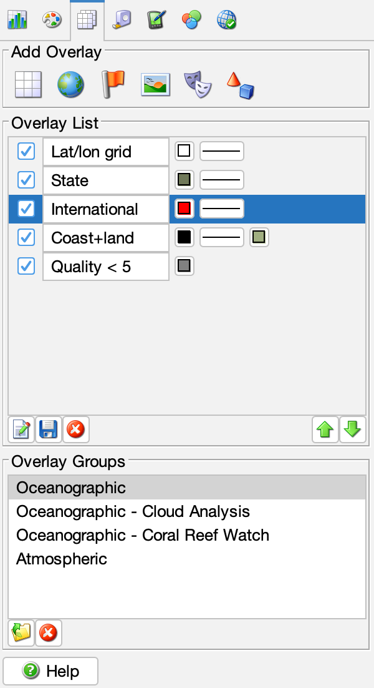

CoastWatch Data Analysis Tool Help: Geographic and mask overlays
In this section:
What are overlays?
CDAT uses data overlays to help give context to the data view. An
overlay can show where latitude and longitude lines fall, where
physical boundaries such as coastline, political borders, and
bathymetric contours lie, and can also mask off certain parts of the
view so that only the relevant data is visible.
Adding an overlay to the view
The following figure shows the overlay controls, with the overlay
addition buttons, current list of overlays, and the saved overlay
groups:

You can add one of several types of overlays to the data view
using the Add Overlay buttons:
- Grid
- Latitude and longitude grid lines with labels. By default, the
grid spacing adapts to the view, but may be set manually.
- Coast
- Land/water boundaries derived from Global
Self-consistent Hierarchical High-resolution Shorelines (GSHHS)
data: http://www.ngdc.noaa.gov/mgg/shorelines/gshhs.html.
- Political
- International and state border lines derived from CIA
WDB-II data. By default, only international borders are shown
and state borders must be added manually.
- Topography
- Topographic and bathymetric contours derived from ETOPO5
elevation data: https://www.ngdc.noaa.gov/mgg/global/etopo5.HTML. By
default, only the 200 m and 2000 m bathymetric contours
are shown, but the overlay may be modified to include any set of
topographic or bathymetric contours.
- Mask -> Bitmask
- A single-color mask that uses a data variable and integer
mask value to mask certain data pixels that contain the same
bits as the mask value. For example, a bitmask can be used to
mask clouds as gray.
- Mask -> Multilayer
- A multiple-color mask that uses a data variable and color
for each bit to mask certain data pixels that contain the bit
values with the corresponding color. For example, a multilayer
mask can be used to analyze the detailed output of a cloud
masking algorithm.
- Mask -> Expression Mask
- A single-color mask that uses a mathematical expression and
color for each bit to mask certain data pixels for which the
result of the expression is true. An expression mask is slower
to compute than a bitmask or multilayer, but is much more
flexible. See the User's Guide cwmath command for the syntax
of the expressions. Only variables imported when the data was
opened may be used in the expression.
- Shape
- Line and polygon data stored in ESRI shapefile format.
Currently, shapefile support is limited: point data cannot be
displayed, shape overlays cannot be saved to an overlay group, and
shapefile rendering may be slow for large shapefiles.
Overlay list
Once added to the list, overlays may be modified, renamed, set
visible or invisible, moved up or down in the list, and deleted.
To edit an overlay's properties, double-click the overlay in the
list or select the overlay and click the Edit
Properties button. You can change simple line properties
such as color and thickness directly from the list. To rename an
overlay, edit the overlay's name text field. Overlay visibility
can be changed by checking or unchecking the visibility box on
the left. The overlay list represents a vertical stack and
overlays are rendered in order from bottom to top. You can use
the Move Up and Move
Down buttons to rearrange the overlay stacking order.
Finally, you can delete overlays by selecting a set of overlays
from the list using Ctrl-click (⌘-click on the Mac) or
Shift-click, and clicking Delete.
Overlay groups
Overlay groups are a convenient means of saving a set of
overlays to be used later. Save a set of overlays as a group by
selecting the overlays using Ctrl-click (⌘-click on the
Mac) or Shift-click, clicking the Save
Group button, and giving the new group a name. Restore a
saved group by selecting an overlay group and clicking Open Group. The overlays are restored with
the same properties they had when saved, and stacked on top of
any other overlays already in the list. An overlay group may be
deleted by clicking Delete Group. CDAT
comes with a default set of overlay groups that you may find
useful; see the preferences and
resources section for more details.
Back to overview